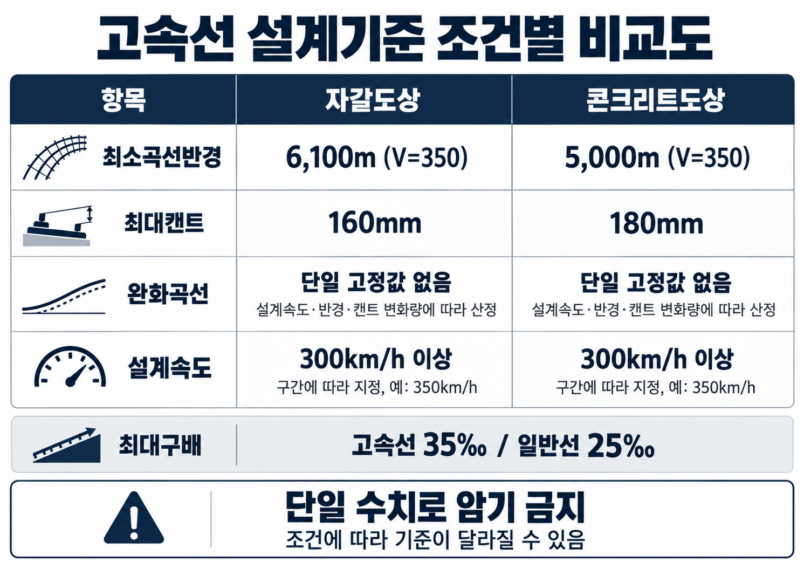

§1. 핵심 용어정의
용어정의 | 설계속도(Design Speed)
선로(노선)를 설계할 때 기준으로 정한 최고 속도. 선로의 곡선반경·캔트 등 모든 설계 요소가 이 속도에 맞춰 결정된다. 실제 열차의 영업 최고속도와는 다를 수 있다.
용어정의 | 곡선반경(曲線半徑, Curve Radius)
선로가 휘어진 구간에서 그 곡선이 그리는 원의 반지름. 반지름이 클수록 곡선이 완만하고, 작을수록 급하다. 고속 운행할수록 더 완만한(큰) 곡선반경이 필요하다.
용어정의 | 완화곡선(緩和曲線)
직선 구간과 곡선 구간 사이에 삽입하는 점이(漸移) 구간. 속도와 원심력이 갑자기 변하지 않도록 서서히 바꿔주어 탈선 위험을 줄이고 승차감을 높인다.
용어정의 | 구배(勾配, ‰)
선로의 기울기를 나타내는 단위. 수평거리 1,000m당 높이 변화(m)를 수치로 표시한다. 예: 25‰ = 1,000m를 가면 25m 오르내림.
§2. 고속선 설계기준 (SOURCE 62)

VIS-129 고속선 설계기준 조건별 비교도 (SOURCE 62)
| 항목 | 고속선 기준 | 비고 |
|---|
| 설계속도 | 300km/h 이상 (구간 예: 350km/h) | 고속선 기준 — 구간별 지정 |
| 최소곡선반경 | V=350km/h 기준: 자갈도상 6,100m / 콘크리트도상 5,000m | 도상 조건에 따라 다름 |
| 완화곡선 길이 | 설계속도·곡선반경·캔트(부족캔트) 변화량에 따라 산정 | 단일 고정 수치 없음 |
| 최대캔트 | 자갈도상 160mm / 콘크리트도상 180mm | 도상 조건별 구분 |
최대 구배 비교
| 선종 | 최대 허용 구배 |
|---|
| 일반선 | 25‰ |
| 고속선 (200 < V ≤ 350 km/h) | 35‰ [R1 — engineering id:59] |
오답 선지 판별
X"고속선 곡선반경 = 3,000m 또는 고정 7,000m" → 오답. V=350km/h 기준 자갈도상 6,100m / 콘크리트도상 5,000m. 도상 조건에 따라 다르며 단일 수치가 없다.
X"고속선이 구배 기준 더 엄격(작다)" → 오답. 고속선(동력분산식)은 구배 성능 우수하여 35‰ 허용. 일반선 25‰보다 크다.
O비교 암기: 곡선반경 고속>일반, 구배허용 고속>일반. 캔트는 도상 조건에 따라 다름 (자갈 160mm / 콘크리트 180mm)
§3. 고속철도 법적 정의 (현행 법령 기준)
고속철도 (철도건설법): 주요 구간 열차 운행속도 200km/h 이상 + 국토교통부장관 지정·고시
일반철도 (철도건설법): 고속철도 외의 철도
※ SOURCE와 현행 법령 기준 별도 구분. 설계속도 300km/h(SOURCE 62)와 법적 정의 200km/h는 다른 기준임에 유의.
§4. 핵심암기
고속선 설계기준 암기 (SOURCE 62)
설계속도: 300km/h 이상 (구간 예: 350km/h)
최소곡선반경: V=350km/h 기준 → 자갈도상 6,100m / 콘크리트도상 5,000m (도상 조건에 따라 상이)
완화곡선 길이: 설계속도·곡선반경·캔트(부족캔트) 변화량에 따라 산정 (단일 고정값 없음)
최대캔트: 자갈도상 160mm / 콘크리트도상 180mm
구배: 일반선 25‰ / 고속선 35‰ [R1]
고속철도 법적 정의: 200km/h 이상 + 국토교통부장관 지정·고시
§5. 시험포인트
핵심 ① [R1]
고속선(200 < V ≤ 350 km/h) 최대 허용 기울기 = 35‰. 일반선 25‰보다 크다.
함정 ①
"고속선 곡선반경 = 7,000m (고정값)" → 오답. 도상 조건에 따라 상이: V=350km/h 기준 자갈도상 6,100m / 콘크리트도상 5,000m. 단일 수치로 암기하면 틀린다.
함정 ②
"고속철도 법적 정의 = 설계속도 300km/h 이상" → 오답. 법적 정의는 운행속도 200km/h 이상 + 국토교통부장관 지정·고시. 설계속도 300km/h는 SOURCE 62 기준.
§6. 문제 연결
4지선다형 · [R1] engineering id:59 · 2024.12 공개복원
Q1.
설계속도 200km/h 초과 350km/h 이하 고속철도 본선의 최대 허용 기울기는?
- ① 25‰
- ② 30‰
- ③ 35‰
- ④ 40‰
정답 및 해설
Q1 정답 ③
③ 35‰가 정답이다. 설계속도 200km/h 초과~350km/h 이하 고속철도 본선의 최대 허용 기울기는 35‰이다. 일반선(25‰)보다 높은 이유는 고속철도가 동력분산식으로 구배 성능이 우수하기 때문이다.
주의: 일반선 25‰ 와 고속선 35‰ 혼동 주의. 고속선 구배 허용값이 더 크다.